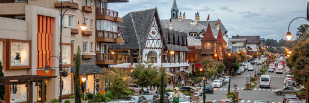

Gramado

A Serra Gaúcha foi habitada, desde tempos imemoriais, pelos índios caingangues. Nos séculos XVIII e XIX a região de Gramado era desbravada por descendentes de açorianos, os chamados "tropeiros", que utilizavam a região para o descanso do gado.
Os primeiros moradores da região não eram elementos estrangeiros e teriam ali se estabelecido em 1875. Tempos após, em 1913, colonos descendentes de imigrantes alemães e italianos, ali se estabeleceram, iniciando o povoamento. O primeiro administrador da cidade, notadamente conhecido como seu fundador, foi José Nicoletti Filho. Sua denominação parece ter-se originado de um pequeno campo que ali havia e que servia de lugar de repouso
Clique aqui para voltar